Welcome to Dhaba
Explore our delicious recipes from various categories.
Sweets
Chocolate Cake
- Mix: Combine 1 ¾ cups flour, 1 ½ cups sugar, ¾ cup cocoa, 1 ½ tsp baking powder, 1 ½ tsp baking soda, and 1 tsp salt.
- Add: Blend in 2 eggs, 1 cup milk, ½ cup oil, and 2 tsp vanilla.
- Stir in: 1 cup boiling water.
- Bake: Pour into greased pans and bake at 350°F (175°C) for 30-35 minutes.
- Cool and Frost.

Gulab Jamun
- Mix: Combine 1 cup milk powder, ¼ cup all-purpose flour, ¼ cup ghee, and ¼ cup milk.
- Knead: Form dough and shape into small balls.
- Heat: Fry balls in hot oil/ghee until golden.
- Prepare Syrup: Boil 1 cup sugar with 1 cup water, add cardamom and rose water.
- Soak: Add fried balls to hot syrup. Let soak for 30 minutes.

Barfi
- Cook: Heat 2 cups milk in a pan, add 1 cup sugar, and cook until thickened.
- Add: Stir in 1 cup milk powder and 2 tbsp ghee. Cook until the mixture leaves the sides of the pan.
- Set: Pour into a greased tray, smoothen, and let cool.
- Cut: Slice into pieces once set.
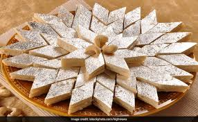
Jalebi
- Prepare Batter: Mix 1 cup all-purpose flour, ¼ cup cornstarch, 1 tsp yeast, 1 cup water. Let it ferment for 2 hours.
- Fry: Heat oil in a pan. Pour batter into a piping bag or squeeze bottle and form spirals in the hot oil. Fry until crisp.
- Prepare Syrup: Boil 1 cup sugar with ½ cup water, add cardamom and saffron. Let it cool slightly.
- Soak: Dip hot fried jalebis into warm syrup for 1-2 minutes.
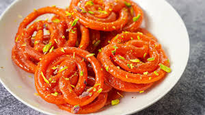
Narkel Narru
- Cook grated coconut with jaggery until thick.
- Add cardamom powder, mix well.
- Shape into small balls.
- Cool and enjoy!
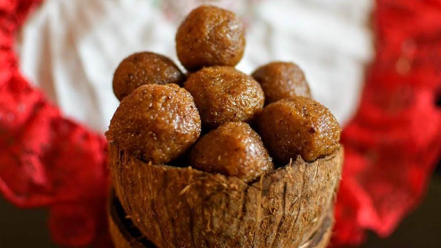
Peda
- Cook: Heat 2 cups condensed milk with 1 cup milk powder in a pan.
- Stir: Continuously stir until the mixture thickens and leaves the sides of the pan.
- Flavor: Add 1/2 tsp cardamom powder and mix well.
- Shape: Let the mixture cool slightly, then shape into small round pedas
- Garnish: Press a pistachio or almond on top (optional).
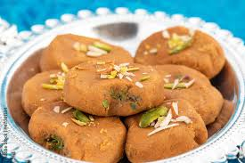
Rabri
- Boil: Heat 1 liter of full-fat milk in a wide pan and bring to a boil.
- Simmer: Reduce heat and simmer, stirring occasionally, until the milk thickens and reduces to about half.
- Sweeten: Add 1/4 cup sugar and 1/2 tsp cardamom powder. Stir well.
- Add: Mix in chopped nuts like almonds and pistachios.
- Cool: Let it cool, then refrigerate.
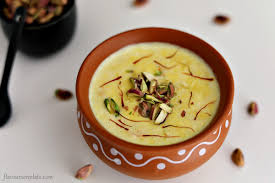
Ghevar
- Prepare Batter: Mix 1 cup all-purpose flour, 1/4 cup ghee, and water to make a smooth, pouring-consistency batter.
- Heat Oil: Heat ghee or oil in a deep, wide pan.
- Fry Ghevar: Pour batter in a thin stream into the hot oil, forming a disc. Fry until golden and crisp. Repeat for more ghevars.
- Soak in Syrup: Dip fried ghevars in warm sugar syrup (1 cup sugar dissolved in 1/2 cup water).
- Garnish: Top with rabri, nuts, and saffron strands.
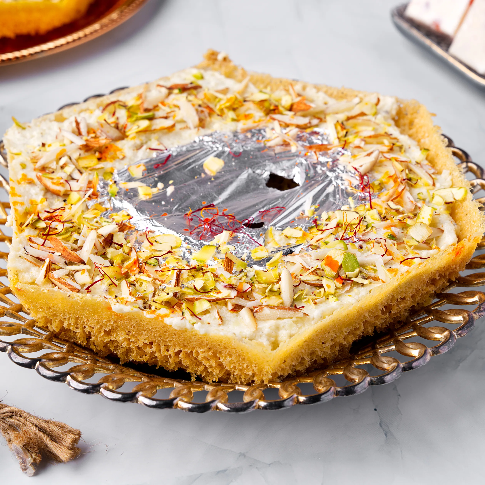
Malpuar
- Make Batter: Mix 1 cup all-purpose flour, 1/4 cup semolina, 1/2 cup milk, and 1/4 cup sugar to form a smooth batter. Let it rest for 30 minutes.
- Fry: Heat ghee in a pan. Pour a small ladle of batter into the hot ghee and fry until golden brown on both sides.
- Soak: Dip fried malpuas in warm sugar syrup (1 cup sugar dissolved in 1/2 cup water) for a few seconds.
- Garnish: Top with chopped nuts and serve with rabri.
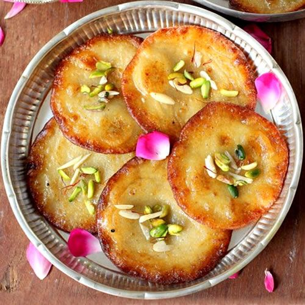
Taler Bora
- Extract Pulp: Grate a ripe palm fruit (taler) and squeeze out the pulp.
- Make Batter: Mix the pulp with 1 cup rice flour, 1/2 cup wheat flour, 1/4 cup jaggery, and a pinch of salt. Add a little water to make a thick batter.
- Fry: Heat oil in a pan. Drop spoonfuls of batter into the hot oil and fry until golden brown.
- Serve: Drain on paper towels and enjoy your Taler Bora!

Snacks
Spring Rolls
- Prepare Filling: Sauté chopped vegetables (carrots, cabbage, bell peppers) with garlic and ginger. Add soy sauce and cook until tender. Let it cool.
- Assemble: Place filling in spring roll wrappers. Roll tightly, sealing edges with a bit of water or flour paste.
- Fry: Heat oil in a pan. Fry rolls until golden and crispy.
- Serve: Drain on paper towels and serve with dipping sauce.

Cheese Balls
- Mix: Combine 1 cup grated cheese, 1/2 cup cream cheese, 1/4 cup chopped nuts (optional), and 1/4 cup chopped herbs or spices (like chives or paprika) in a bowl.
- Shape: Form the mixture into small balls.
- Chill: Refrigerate for at least 30 minutes.
- Serve: Serve with crackers or bread.

Bhajni chakli
- Prepare Dough: Mix 1 cup rice flour, 1/2 cup besan (gram flour), 1/4 cup wheat flour, 1 tsp ajwain (carom seeds), 1 tsp sesame seeds, 1/2 tsp red chili powder, 1/2 tsp turmeric powder, and salt to taste. Add water gradually to form a smooth dough.
- Shape: Use a chakli maker to shape the dough into spirals.
- Fry: Heat oil in a pan. Fry the chaklis until golden and crisp.
- Cool: Drain on paper towels and cool before storing.
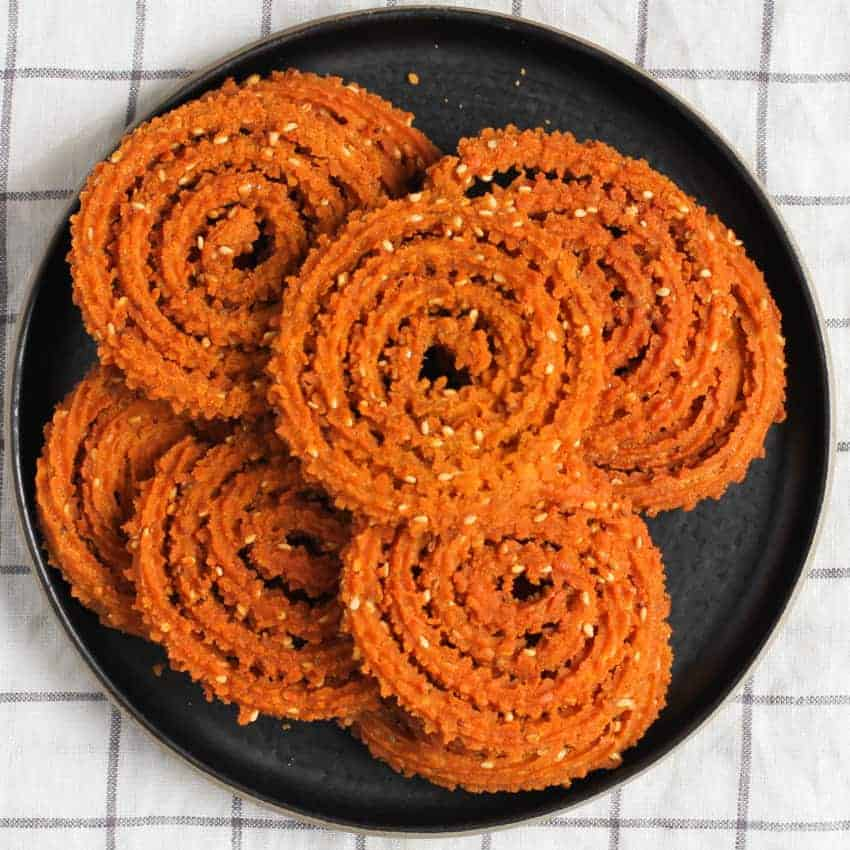
Shakkarpara
- Make Dough: Mix 2 cups all-purpose flour, 1/4 cup ghee, 1/4 cup sugar, and a pinch of salt. Add water gradually to form a smooth dough. Let it rest for 30 minutes.
- Roll & Cut: Roll out the dough into a thin sheet. Cut into diamond shapes.
- Fry: Heat oil in a pan. Fry the pieces until golden brown.
- Cool: Drain on paper towels and cool before storing.
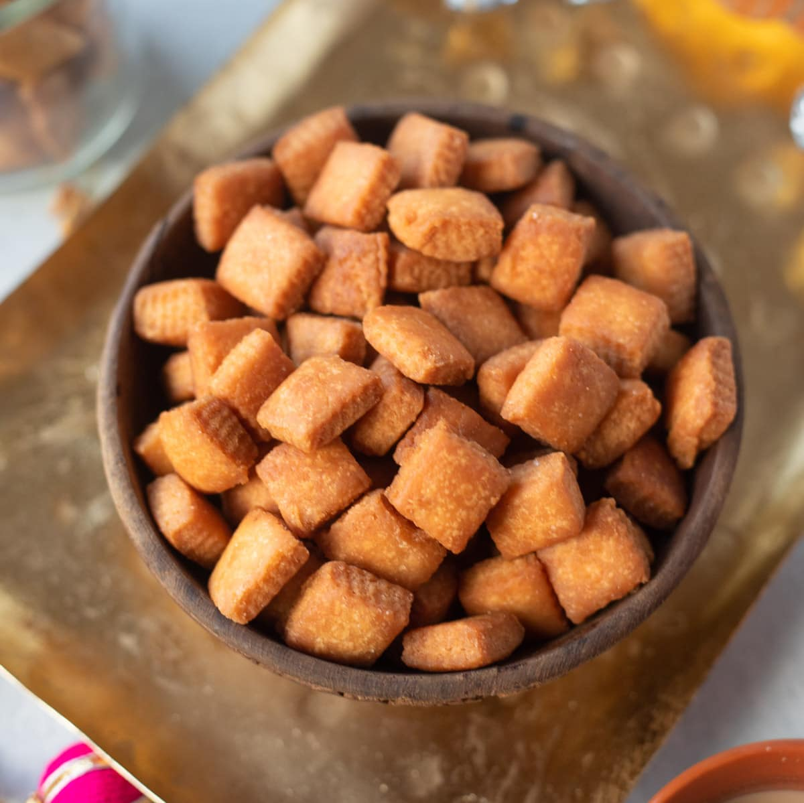
Coconut-Karanji
- Prepare Filling: Mix 1 cup grated coconut, 1/2 cup jaggery (or sugar), 1/2 tsp cardamom powder, and a handful of chopped nuts (optional). Cook until the mixture thickens and let it cool.
- Make Dough: Combine 1 1/2 cups all-purpose flour with 1/4 cup ghee, a pinch of salt, and water to form a smooth dough. Let it rest for 30 minutes.
- Assemble: Roll out the dough into small circles. Place a spoonful of the coconut mixture in the center, fold and seal the edges.
- Fry: Heat oil in a pan and fry the karanjis until golden brown and crisp.

Aloo-Chop
- Prepare Filling: Mash 3-4 boiled potatoes. Sauté with 1 chopped onion, 2 green chilies, 1/2 tsp turmeric, 1/2 tsp cumin, and salt. Add chopped cilantro and cool.
- Shape: Form the potato mixture into small patties or oval shapes.
- Coat: Dip each patty in flour, then in a batter of flour and water, and coat with breadcrumbs.
- Fry: Heat oil in a pan and fry the patties until golden brown.

Khakra
- Prepare Dough: Mix 1 cup whole wheat flour with 1/4 cup besan (gram flour), 1/2 tsp ajwain (carom seeds), 1/2 tsp cumin seeds, 1/2 tsp chili powder, and salt. Add water gradually to form a smooth dough.
- Roll: Divide the dough into small balls. Roll each ball into a thin circle.
- Cook: Heat a tava or griddle. Cook each circle on medium heat, flipping and pressing with a cloth to ensure even cooking until crisp and golden.
- Cool: Let the khakras cool and store in an airtight container.
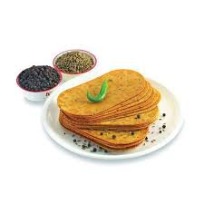
Banana Chips
- Slice: Thinly slice 2-3 green bananas (using a mandolin if possible) and soak in water with a pinch of salt for 10 minutes.
- Drain: Pat slices dry with a paper towel.
- Fry: Heat oil in a pan. Fry banana slices in batches until golden and crisp. Remove and drain on paper towels.
- Season: Sprinkle with salt and any desired spices.
Simple Food
Spaghetti Aglio e Olio
- Cook Pasta: Boil 200g spaghetti in salted water until al dente. Reserve 1/4 cup pasta water, then drain.
- Sauté: Heat 1/4 cup olive oil in a pan. Add 4-5 sliced garlic cloves and 1/4 tsp red pepper flakes. Cook until garlic is golden.
- Combine: Add cooked spaghetti to the pan. Toss with reserved pasta water and 1/4 cup chopped parsley.
- Serve: Season with salt, pepper, and grated Parmesan (optional). Serve warm.

AamChatni
- Cook Mango: Peel and dice 2-3 raw mangoes. Cook with 1 cup sugar, 1/2 tsp turmeric, and 1/2 tsp red chili powder until mangoes are soft and the mixture thickens.
- Add Spices: Stir in 1/2 tsp cumin seeds, 1/2 tsp mustard seeds, and a pinch of salt.
- Cool: Allow the chatni to cool before serving.

Chili-Paneer
- Prepare Paneer: Cut 200g paneer into cubes. Coat with 1/4 cup cornstarch and fry in hot oil until golden. Set aside.
- Make Sauce: Sauté 1 chopped onion, 1 bell pepper, and 2-3 chopped green chilies in oil. Add 2 tbsp soy sauce, 1 tbsp chili sauce, and 1 tbsp vinegar.
- Combine: Add fried paneer cubes to the pan. Toss to coat with the sauce.
- Garnish: Sprinkle with chopped green onions and serve hot.

Bread-Pizza
- Prepare Toppings: Mix 1/2 cup pizza sauce with 1/2 cup shredded cheese, and add desired toppings (e.g., chopped vegetables, olives, pepperoni).
- Assemble: Spread sauce over slices of bread. Top with cheese and toppings.
- Bake: Place in a preheated oven at 180°C (350°F) for 10-15 minutes until the cheese is melted and bubbly.
- Serve: Garnish with herbs (optional) and serve ho.
Idli
- Prepare Batter: Soak 1 cup urad dal and 2 cups rice separately overnight. Grind each into a smooth batter and mix together with salt.
- Ferment: Allow the batter to ferment in a warm place for 8-12 hours.
- Steam: Pour batter into idli molds. Steam in an idli steamer for 10-12 minutes.
- Serve: Remove idlis and serve with coconut chutney and sambar.
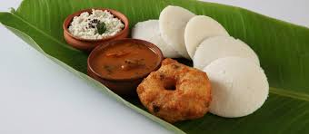
Dahi Vada
- Prepare Vadas: Soak 1 cup urad dal overnight, then grind into a smooth batter with salt. Shape into small rounds and deep-fry until golden.
- Soak Vadas: Soak fried vadas in warm water for 10 minutes, then drain.
- Assemble: Arrange vadas in a serving dish, pour over 2 cups of beaten yogurt, and sprinkle with chaat masala, roasted cumin powder, and chopped cilantro.
- Garnish: Drizzle with tamarind chutney and serve.